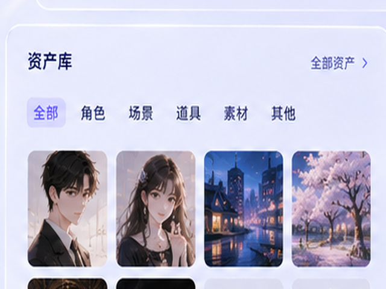
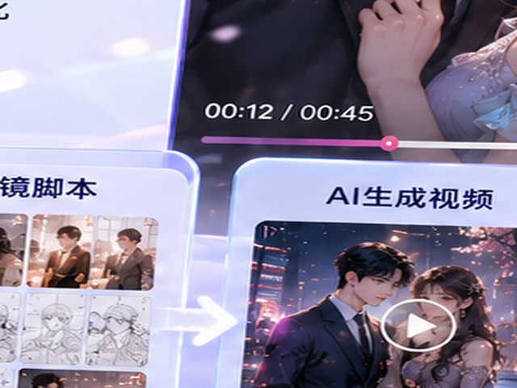

产品能力
进入引导创作台六步完成一部AI漫剧
从剧本策划到后期预览，每一步都有明确产物，新手也能沿着路径完成第一集创作。
1剧本策划
→2视觉设定
→3角色资产
→4分镜脚本
→5视频生成
→6后期预览
剧本智能体
从一句话、长剧本或 版权 文本中生成可生产结构。
- 一句话扩写
- 文本 / 文档 导入
- 长剧本拆解
- 角色/场景/道具提取
- 爽点、反转点、结尾悬念建议
分镜导演
自动将剧情转换为适合竖屏观看的镜头语言。
- 精简 / 标准 / 细拆模式
- 镜头类型推荐
- 前 3 秒开场钩子镜头
- 结尾钩子镜头
- 拖拽排序和单镜头重做
剧本成剧向导
从创作入口一步步确认故事、分集、资产和成本。
- 选择目标平台
- 选择用户人群
- 分集结构建议
- 付费节点标注
- 生成前成本预估
角色设定库
保持角色跨集、跨镜头一致。
- 角色三视图
- 多套服装
- 表情包
- 角色口吻
- 配音试听
- 一致性锁定与相似度评分

场景与道具库
统一世界观、场景空间和关键道具。
- 场景四视图
- 道具资产
- 风格统一
- 跨集复用
- 场景连续性检测

风格预设
用题材模板快速锁定画风和字幕样式。
- 古风 / 都市 / 玄幻 / 怪谈
- 品牌色与 标识 资产
- 字幕模板
- 封面大字风格

视频生成引擎
从分镜生成竖屏视频，并支持按成本和质量切换。
- 草稿 / 标准 / 高清
- 成本优先 / 画质优先
- 批量生成
- 失败自动补偿
- 9:16 输出
配音与字幕
多角色配音、情绪、字幕和口型匹配。
- 多角色音色
- 情绪配音
- 旁白 / 对白切换
- 自动字幕
- 关键词高亮
剪辑工作台
后期精修、热更新和工程导出。
- 多轨时间线
- 字幕轨 / 音效轨
- 转场特效
- 原地热更新
- 剪映工程导出